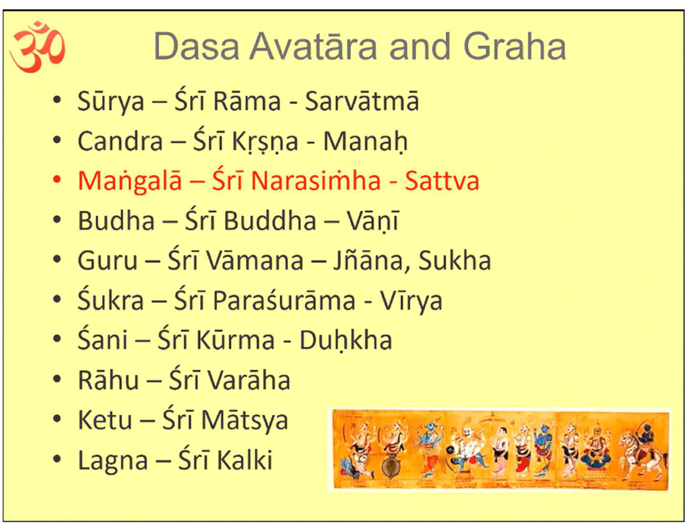
slides (n)
Class Structure & Logistics: - All webinars will be recorded and available within 24 hours for those who can’t attend live - Students get 2 years access to course materials (1 year of active study + 1 additional year) - Two live webinars per month (1 hour each) with mentors to summarize lessons, answer questions, and provide examples - Telegram group open for daily questions starting immediately - Private emails available for personal queries
Guru Mantra Practice: - Each class begins with “Om Guruve Namaha” repeated 12 times - Thursdays are preferred - Idea is placing Guru on lagna - This places Guru in each of the 12 rashis/houses symbolically - Ensures blessings for proper learning and understanding
Parampara Mantra (Main Practice): - The mantra is: Hare Rama Krishna (Janaka Shadakshari Mantra - 6 syllables) - Comes from Janaka Rishi, passed through Shri Achyutananda tradition - Daily practice: First thing upon waking, before feet touch ground - Recommended: 3 rounds of 108 repetitions (324 total) - Can be done mentally or with mala/finger counting - Maintains satva, continuous learning connection, and parampara flow
Study Recommendations: - Keep a special notebook as a Sanskrit dictionary for terminology - Keep a separate notebook for all mantras (write mantras in red pen - blessing of Ganesha) - Study preparatory lessons (Arambha) before official course starts in January - Complete homework for self-testing (not graded, but highly encouraged)
Software & Tools: - Recommended: Jagannatha Hora (free) or Shri Jyoti Star (paid) - iPhone app: “Jyotish” (though no perfect mobile solution exists yet)
Course Philosophy: - Self-paced online course based on Pandit Sanjay Rath’s live teachings - Focus on building solid foundations slowly and thoroughly (Saturn/Parashara energy) - Knowledge grows in depth and breadth over time - Students learn from each other’s questions
These represent the five tattvas and are worshipped in order:
Important: Any one of these five can lead to moksha if worshipped properly.
Setup: - Draw Swastika mandala with red powder/paste - Place Ganesha picture at eye level (looking slightly up = sattvic) - Light ghee lamp (represents your home - keep it clean and personal) - Face East or Northeast (or strongest direction in Ashtakavarga of Sun)
Mantra Selection: - Use one of 12 Ganesha names based on YOUR LAGNA (from Sri Narada’s list) - Example: Sagittarius Lagna = “Om Soham balachandraya svaha”
Practice: - Minimum: 108 times daily for 1 year - Rigorous: 15 malas daily (22 malas on Chaturthi) - Start on Chaturthi (Ganesha’s tithi) - Keep pen and paper near Ganesha during sadhana (use that pen for Jyotish notes later)
Purpose: Strengthens Lagna, Jupiter, and Mercury → supports learning and Guru-Shishya connection
Preparation: 1. Recite Shanti Mantra (from Rigveda) 2. Bija Pranayama (10 times): done with Pranayama - Inhale: “Om” - Hold: “Hreem” - Exhale: “Shraum” - Use both nostrils
Main Mantra: check slide
Purpose: - Connected to Mangala (Mars) - gives strength (satva) - Removes the 6 Ripus (enemies): Moha, Kama, Lobha, Matsarya, Krodha, Mada - Purifies luminaries, nakshatras, and agni - Strengthens mind for learning negative karmas in Jyotish
Purpose: Cleanses first three chakras (Muladhara, Swadhisthana, Manipura) related to basic instincts and manifested universe
Mala/Rosary: - Rudraksha recommended for Ganesha - 54 beads preferred (108 also fine) - Don’t touch with index finger (tarjani) - Once dedicated to sadhana, don’t use for other purposes
Diet: Vegetarian recommended but not mandatory for these sadhanas
Timing: - Parampara Mantra (Hare Rama Krishna): First thing upon waking - Other sadhanas: After bath, in the morning
Direction: East or Northeast best (or use Ashtakavarga of Sun for personal direction)
Would you like me to clarify any specific aspect of these practices?

Telegram Group Usage: - Follow the syllabus/modules systematically - Keep questions focused on current module being studied - Ask intentional, specific questions (not open-ended “tell us more”) - Telegram is just a tool - take your own notes as primary resource - Mentors monitor discussions and will intervene if needed
Learning Approach: - Self-paced online course with mentor support - Guruji’s teaching method: Start with the NAME → meaning → application - Not spoon-feeding - some questions left for self-research - Learn from each other’s questions and discussions
Materials: - Adobe Flash issue being resolved - patience requested - All webinars recorded on private YouTube channel (permanent access) - 2-year access to PJC Year 1 materials (extendable)
Jyotish = Study of 33 Devas (not just planets/signs)
Rashis vs Bhavas: - Rashis = Material resources, physical quantities (“heap”) - Bhavas = Our thoughts/perceptions about life aspects
Important Axes: - 1st-7th: Birth-Death, Me-Others (horizontal, eye-level) - 4th-10th: Midnight-Noon, Lowest-Highest point (vertical)
Three Material Worlds: - Bhuloka - Earth (where we are) - Bhuvarloka - Solar system (Sun, planets) - Svargaloka - Sky (nakshatras, constellations)
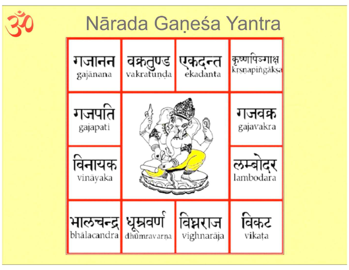
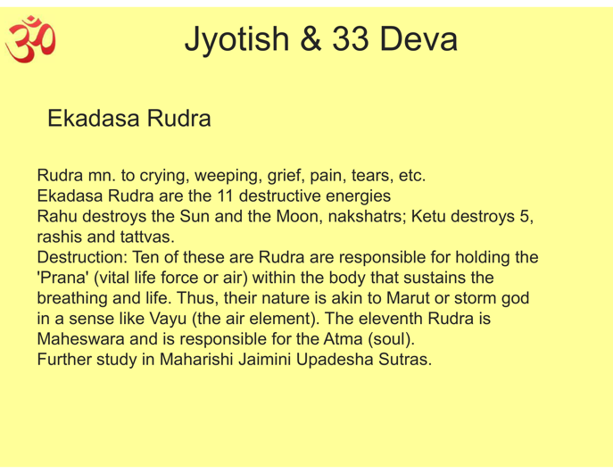
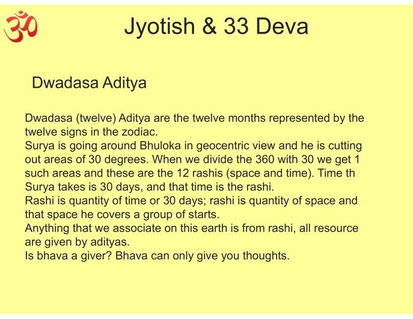
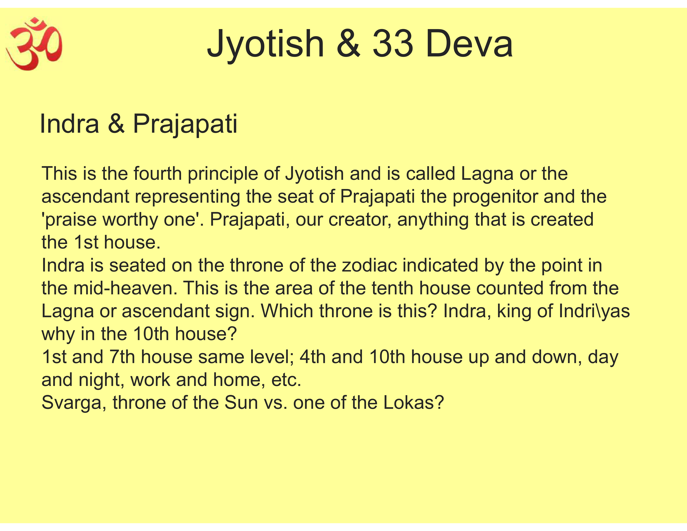
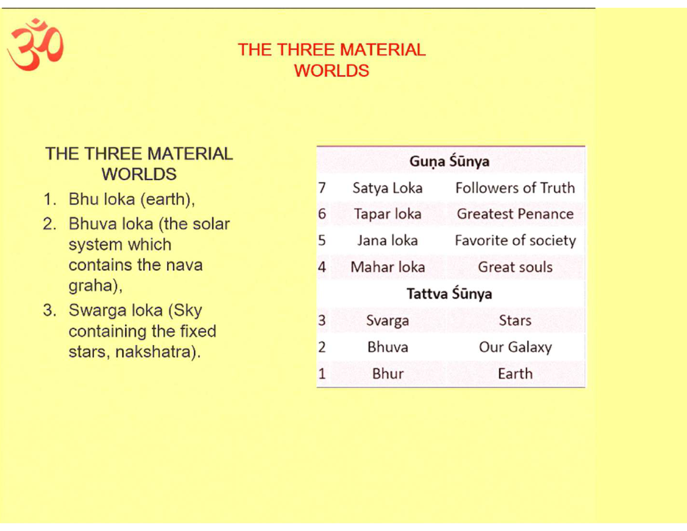
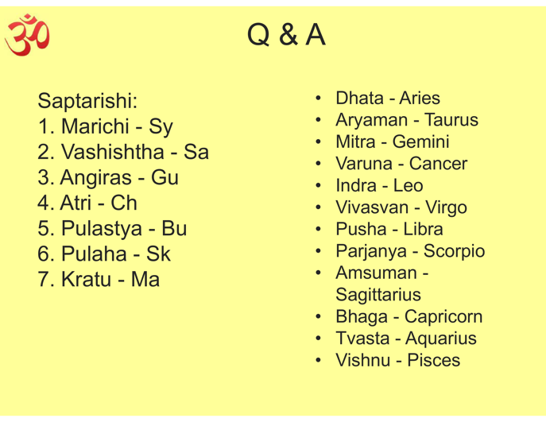
Pancha = Five, Anga = Limbs
The five fundamental divisions of time that form the foundation of any horoscope. Panchanga must be examined before looking at planetary positions, as it shows the quality of time for that birth.
Connection: Agni (fire), energy levels, physical health
Calculation: Sunrise to next sunrise
Seven Varas: Ravivara (Sunday), Somavara (Monday), Mangalavara (Tuesday), Buddhavara (Wednesday), Guruvara (Thursday), Shukravara (Friday), Shanivara (Saturday)
Analysis: - Check Varesha (lord of the day) placement from Lagna - Also check Varesha placement from Surya
Example Given: Franklin D. Roosevelt - Born Monday (Varesha = Moon) - Moon in 10th house conjunct Mars - Moon has zero Digbala (directional strength) in 10th - Moon-Mars = Gandanta (fire-water conflict) - Moon in 6th from Sun (enemy position) - Result: Polio (health issues related to movement on 4th-10th axis)
Connection: Jala Tatva, relationships, emotional content, interactions
Calculation: Sun-Moon relationship; 1 tithi = 12 degrees of zodiac
30 Tithis total: 15 in Krishna Paksha (waning), 15 in Shukla Paksha (waxing)
Eight Lords: Surya, Chandra, Mangala, Budha, Guru, Shukra, Shani, Rahu (Ketu has no lordship)
Analysis: Check Tithi lord placement from 4th house
Rikta Tithis (4th, 9th, 14th) - Most problematic: - Too much emotion, self-centered - Chaturthi - Ganesha (deity) - Navami - Durga (deity) - Chaturdashi - Shiva (deity)
Other Doshas: - Ekadashi (11th) - Addiction/anger issues (Mars/Agni) → fasting advised - Trayodashi (13th) - Wealth problems - Krishna Chaturdashi & Shukla Pratipada - Serious relationship issues (related to Soma’s sin with Tara)
Example Given: Marilyn Monroe - Tithi lord = Venus - Venus in 10th house in Aries (enemy sign) - Zero Digbala - Had relationships but they were problematic
Eight directions where grahas have full potential:
Plus: Upward (Ketu/Ananta - Moksha), Downward (Lagna/Brahma - Rebirth)
Shows which grahas block each direction:
Key Point: These are pairs that create either debate (Sattvic) or war (Tamasic)
Would you like me to clarify any specific aspect of Panchanga?
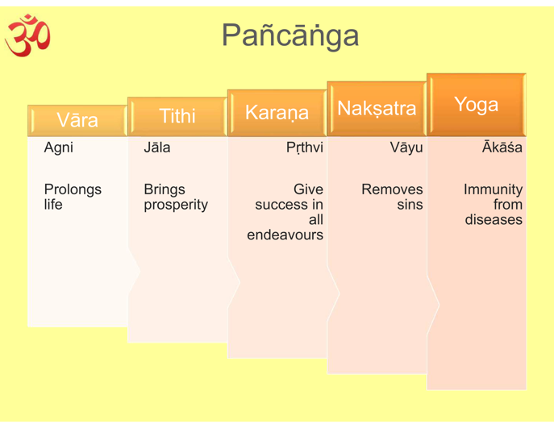
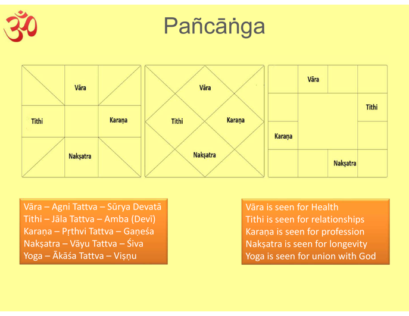
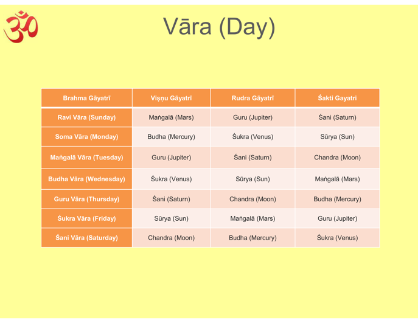
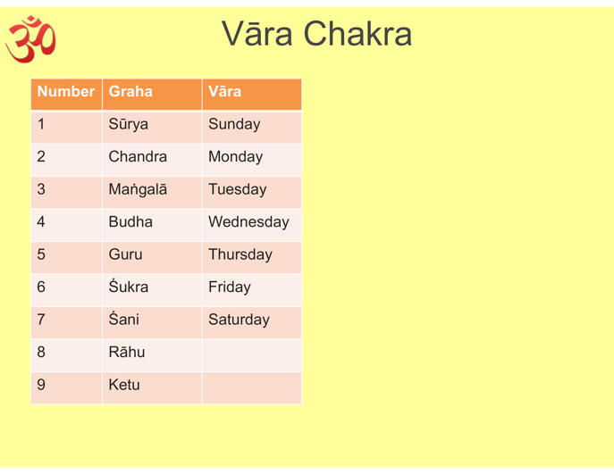
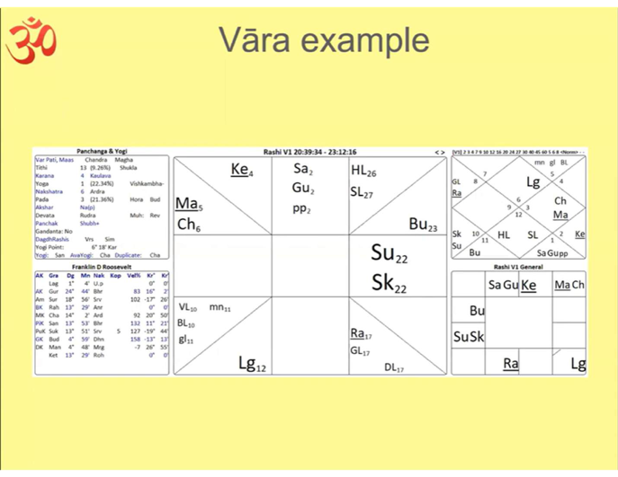
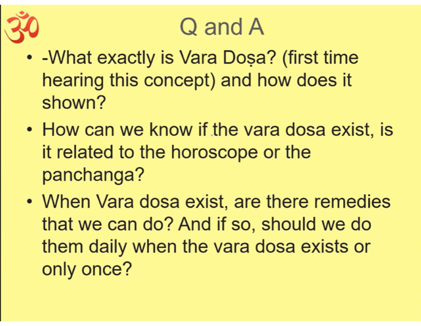
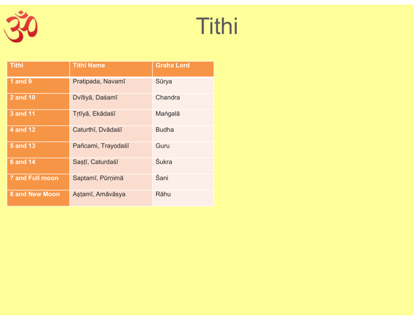
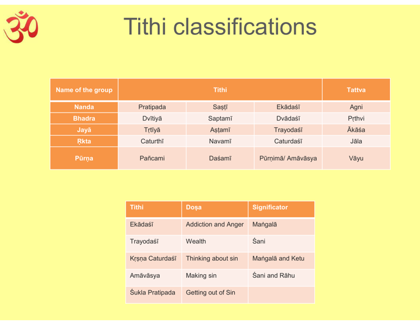
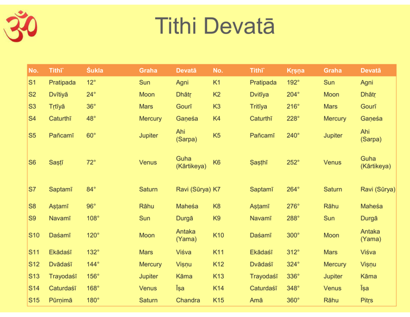
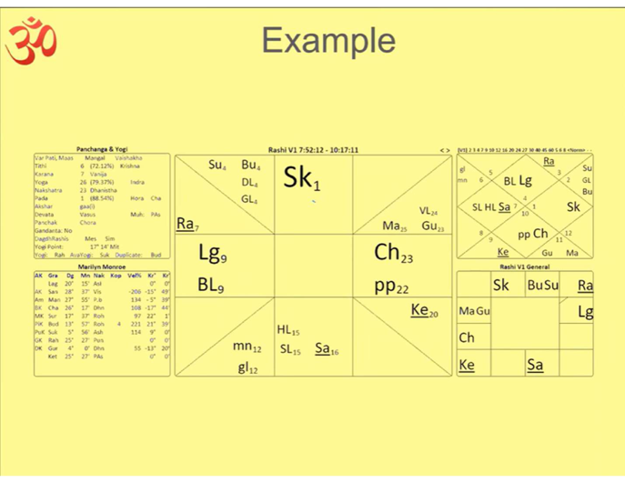

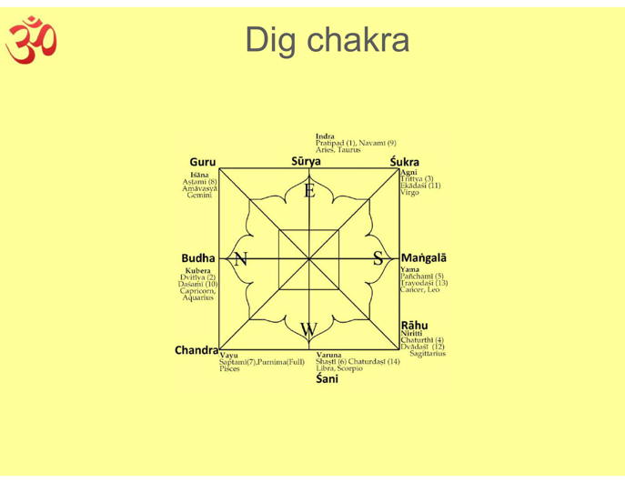
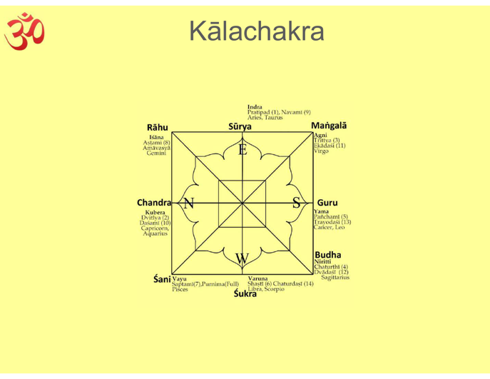
Learning Process: - Jyotish learning is spiral - same topics revisited from different angles/levels - Currently using “microscope” approach (detailed) vs “telescope” (broad picture from Aramba) - Learning Jyotish is like performing Brahma Yagya - devas work on you as you learn - Don’t fear Panchanga doshas you discover - you’re only seeing small details, not full picture
Important Clarifications: - Do NOT worship Sanjay Rath or put his picture on altar - He is Shiksha Guru (5th house - teacher of subject) - NOT Diksha Guru (9th house - spiritual guide who takes responsibility for soul)
Names that differ from popular usage: - Mesha (Aries) - Ram - Vrishabha/Vrisha (Taurus) - Bull - Mithuna (Gemini) - Couple - Karkata (Cancer) - Crab - Simha (Leo) - Lion - Kumari (Virgo) - Young virgin girl (not just Kanya) - Tula (Libra) - Scale/Balance - Ali (Scorpio) - NOT Vrishchika; means blessing, bridge, or exalted (refers to semen storage) - Dhanu (Sagittarius) - Bow/Archer - Makara/Nakra (Capricorn) - Reversal of hell (karma determines direction) - Kumbha (Aquarius) - Pot/Water bearer - Meena (Pisces) - Fish
Key Principle: Rashis with unclear/multiple symbols carry Brahma Dosha
Clear, single-element symbols: 1. Mesha - Ram (clear) 2. Vrishabha - Bull (clear) 3. Karkata - Crab (clear) 4. Simha - Lion (clear) 5. Vrishchika/Ali - Scorpion (clear)
| Rashi | Planet Showing Dosha | Devata Angered | Nature of Dosha |
|---|---|---|---|
| Meena | Surya (Sun) | Agni | Fish cursed to never see sunlight; Remedy: Pranayama |
| Kumbha | Chandra (Moon) | Jala | Water gets spoiled/fermented in pot; emotions problematic |
| Makara | Guru (Jupiter) | Indra | Loss of senses/direction; alcohol issues |
| Dhanu | Budha (Mercury) | Vishnu | Battlefield; right vs wrong obsession; righteous anger |
| Tula | Mangala (Mars) | Skanda | War vs prosperity conflict; “all fair in love and war” |
| Kanya | Shani (Saturn) | Brahma | Purity vs impurity; obsession with cleanliness |
| Mithuna | Shukra (Venus) | Lakshmi | Boy + girl + club + instrument; dominant Bhuloka dosha; relationship/emotion issues |
Usage: Check dosha planet in chart when analyzing that ascendant - may not be as helpful as expected
Natural zodiac = God’s body template: 1. Mesha - Head 2. Vrishabha - Face & neck 3. Mithuna - Arms & shoulders 4. Karkata - Chest, heart, breast 5. Simha - Stomach & liver 6. Kanya - Intestines, navel 7. Tula - Below navel, kidneys 8. Vrishchika - Genitalia (HORIZONTAL - Ketu reverses) 9. Dhanu - Thighs 10. Makara - Knees 11. Kumbha - Calves 12. Meena - Feet (HORIZONTAL - Ketu reverses)
Exception: Ketu-ruled parts are horizontal, not vertical
| Type | Rashis | Guna | Energy | Devata |
|---|---|---|---|---|
| Chara (Movable) | Mesha, Karkata, Tula, Makara | Rajas | Excess energy, pioneers, creative | Brahma |
| Sthira (Fixed) | Vrishabha, Simha, Vrishchika, Kumbha | Tamas | Inert, stable, sustaining | Rudra |
| Dwi (Dual) | Mithuna, Kanya, Dhanu, Meena | Sattva | Balanced between mobile & fixed | Vishnu |
Rashi lord’s guna adds layer to rashi: - Sattva planets: Surya, Chandra, Guru - Rajas planets: Budha, Shukra - Tamas planets: Mangala, Shani
Example: Mesha = Chara (Rajas by creation) + Mars lord (Tamas) = High energy but can be lazy/uninformed
How to Read: Check which guna dominates based on lord’s strength in chart
Mesha, Mithuna, Simha, Tula, Dhanu, Kumbha - Aggressive, assertive, extroverted, outspoken - Make own decisions, less likely to seek advice
Vrishabha, Karkata, Kanya, Vrishchika, Makara, Meena - Passive, introverted, sustaining - More likely to seek guidance/advice
For Child Gender (Saptamsha only): - Mithuna & Karkata SWAP - Kumbha & Meena SWAP
Usage: Shows how much support/ease person has in getting knowledge, solutions
From Sun & Moon (King & Queen): 1. Sun & Moon - Leo & Cancer (King & Queen’s quarters) 2. Budha - Gemini & Virgo (Prince/Princess - next to parents) 3. Shukra - Taurus & Libra (Court ladies) 4. Mangala - Aries & Scorpio (Guards/Knights; Scorpio also has spies via Ketu) 5. Guru - Sagittarius & Pisces (Advisors/Priests/Ministers) 6. Shani - Capricorn & Aquarius (Workers/Commoners/Labor)
Also shows: Speed of planets from Earth (geocentric view)
Fingers = 12 Rashis (4 fingers × 3 parts = 12)
Dual lagnas control through: - Budha lagnas (Mithuna/Kanya) - Control via information/details - Guru lagnas (Dhanu/Meena) - Control via knowledge/belief systems
Next Steps: This foundational knowledge will be layered with grahas (planets), bhavas (houses), and yogas in upcoming lessons.
Would you like me to clarify any specific concept?


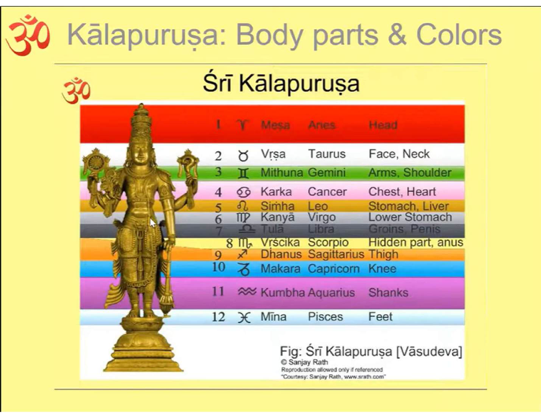


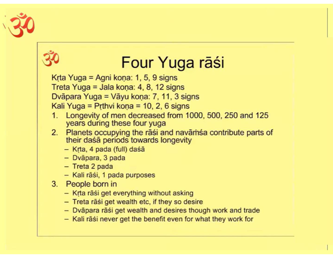
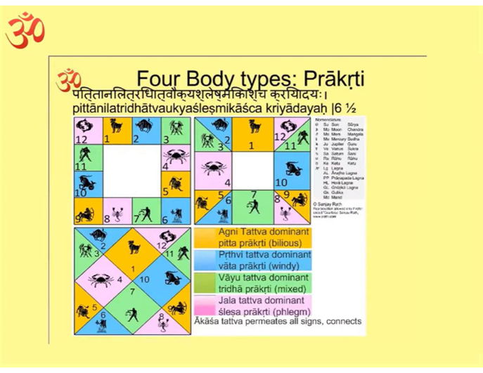

Core Principle: Sanskrit consonants have numerical values (0-9)
Key Rules: - Vowels = 0 (only counted if name starts with vowel) - Use pronunciation, not spelling - Drop incomplete consonants (without following vowel) - Ra/La rule: If consonants joined with R or L, keep only initial consonant - Reverse the number after calculation - Divide by 12 to get remainder = Rashi
Example: Vivekananda - Consonants: Va-Ve-Ka-Na-Na-Da - Values: 4-4-1-0-8 - Number: 44108 → Reversed: 80144 - After dividing by 12 → Remainder = 4 (karka rahsi)
Usage: - Rashi (sign) = interaction with people - House number = inner manifestation
Horizon: Where earth and sky meet (observer-dependent)
Key Points: - Udaya Lagna = Eastern horizon (rising point) - Asta Lagna = Western horizon (setting point) - 180° from Udaya - MC (Mid-Heaven/Zenith) = 90° above observer - Ecliptic = Horizontal plane between Sun & Earth
Directional Degrees: - North = 0°/360° - East = 90° - South = 180° - West = 270°
Method: Take Lagna degree ± 15 degrees = 30° house span
Example: Swami Vivekananda (26° Dhanu Lagna) - 1st House = 11° Dhanu to 11° Makara - 2nd House = 11° Makara to 11° Kumbha - And so on…
Result: Planets may shift houses if they’re within 15° of cusp
In Vivekananda’s chart: - Mars shifted from 5th → 4th house - Venus shifted from 2nd → 1st house - Jupiter shifted to 10th house
Significance: When many planets shift = major life transformations
Starting Point: Uses Bhava Lagna (special lagna, moves 2 hours/sign)
Same process: Bhava Lagna degree ± 15°
Key Difference: - Bhava Chakra starts from Udaya Lagna - Bhava Chalit starts from Bhava Lagna (calculated separately)
Setup: 1. Draw Bhava Chalit Chakra 2. Place 6 AM where Sun is located 3. Place 6 PM in 7th house from Sun 4. Each house = 2-hour period
Planet Activities & Best Times:
| Planet | Activity | Best Time |
|---|---|---|
| Surya | Spiritual practice, energy level | Sun’s house + aspects |
| Chandra | Eating/food | Moon’s house + aspects |
| Mangala | Exercise, physical strength | Mars house + aspects (4th, 7th, 8th from itself) |
| Budha | Reading, learning, playing | Mercury’s house + aspects |
| Guru | Big decisions, digestion, conclusions | Jupiter’s house + aspects |
| Shukra | Relationships, indulgence | Venus’s house + aspects |
| Shani | Resting (15 min minimum) | Saturn’s house + aspects |
| Rahu | NO activity - meditation time | Rahu’s house + aspects |
| Ketu | Avoid activities - meditation | Ketu’s house + aspects |
Important Notes: - Check planet’s aspects (5th, 7th, 9th, 2nd from itself for Rahu) - When planets conjunct = divide time between both activities - Each house = 2 hours, but find at least 15 min for that activity - Movement is anti-zodiacal (Sun moves through houses, not signs)
Practice tip: Use each chart exclusively for 1-3 months to master all types
Homework: Draw your Bhava Chalit Chakra and create your biological clock timing table!
Would you like clarification on any specific concept?
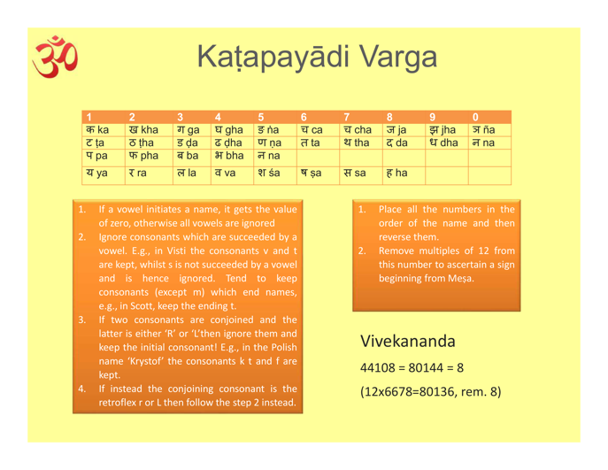
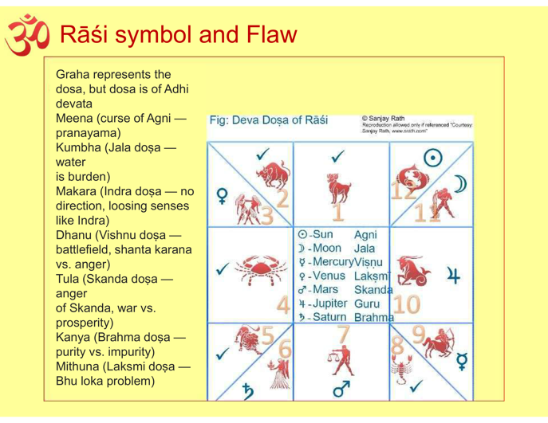

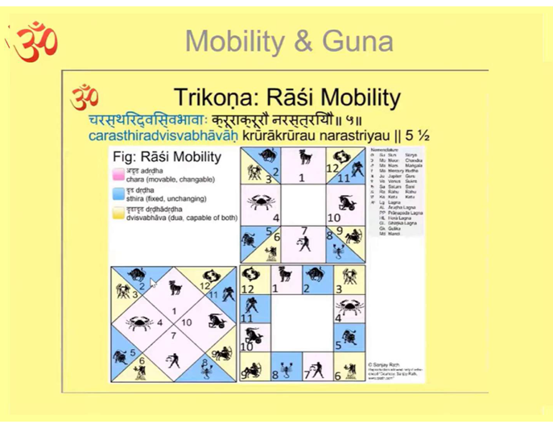
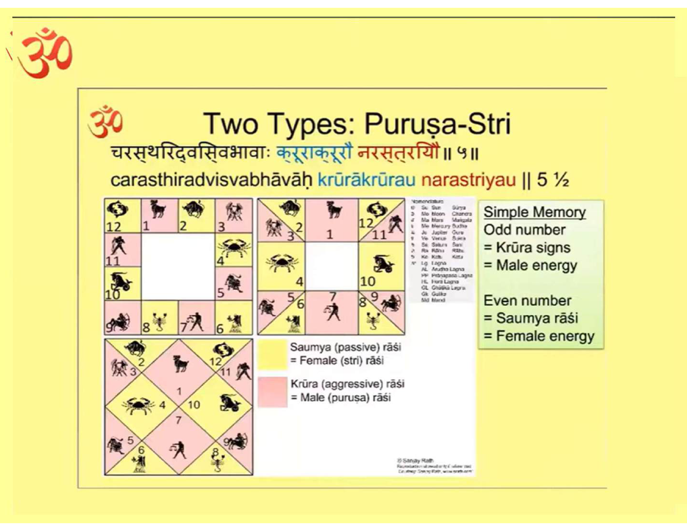
Parashara’s Definition (Chapter 3, Shloka 1): Heavenly bodies classified by: 1. Visibility (can we see them?) 2. Movement (do they move?)
KEY POINT: Grahas have the inherent nature to eclipse the mind - this is their fundamental characteristic.
Question addressed: If we only count visible bodies, why include Rahu/Ketu?
Answer: - They are mathematical points (nodes of the Moon) - They create inverse light/shadow (like closing eyes after seeing sun = black circle) - They represent extremes of the mind: - Rahu = Fully material, maximum desire, wants to consume everything - Ketu = Fully detached, wants nothing, renunciation
Manifestations: - Rahu: Foreigners, different cultures, borders, geographical boundaries, fermentation, alcohol, medicine - Ketu: Outcasts, monks/nuns, spiritual people, those who renounce society - Example given: Man who moved to attic for years, refused all contact = clear Ketu influence
Nature: Planet behaves like Rahu/Ketu
Characteristics: - Not progressing - standing still or pacing - Unfulfilled desire/karma with that planet - Unpredictable, odd behavior - Cannot be trusted (unexpected turns) - May not give results (especially in Prashna/horary)
Strength Implications: - Retrograde = Extremely strong (like nodes) - Has Cheshtabala (directional strength) - Can cause highest grahana (eclipse power)
Prashna (Horary) Rules: - If significator is vakri → Won’t happen (or needs 3 attempts) - 3x multiplier: 3x more effort, 3 attempts, or 3 blessings/children
5 Direct Motions: 1-5. (Various speeds of forward movement)
3 Retrograde Motions: 1. Vakra - Standard retrograde 2. Anu-vakra - Slowing down in retrograde 3. Kutila - Stationary (about to change direction)
IMPORTANT: Kutila applies to both transitions: - Direct → Retrograde - Retrograde → Direct
Outer Planets (Mars, Jupiter, Saturn):
Exercise given: Draw blank chart, place Jupiter on Lagna
Inner Planets (Mercury, Venus): - Requires deep astronomical study (Surya Siddhanta) - Not explained in basic course
Jupiter: Sun in 5th from Jupiter → Jupiter stationary (velocity = 7, very low)
Saturn: Opposite Sun (7th house) → Highest retrograde (velocity = -223%)
Velocity Interpretation: - Minus (-) = Retrograde - Close to 0 = Stationary - High positive = Fast direct motion - High negative = Fast retrograde (double speed)
Note: No exact ranges given for motion types - must observe velocity values
NO! Planet stays where it is.
Example: Retrograde boyfriend still behaves oddly, but he’s still your boyfriend in the same place.
What changes: - Planet gets nature of nodes - Can cancel exaltation/debilitation (taught in next lesson) - Creates yogas from its actual position
Question: Why do grahas show different colors in nakshatra vs rashi?
Answer - The Three Lokas:
How Grahas Work: - Grahas move through nakshatras (truth) - Cast shadow on both nakshatras AND rashis - Bind nakshatra significations with rashi significations
Nakshatras = Your thoughts, emotions, ideas (lunar, night concept) - Where graha is = your specific lens of thinking/feeling
Rashis = Material resources, physical things (everything you can see/touch) - Where graha is = where you experience grahana materially
Example: Two planets in same rashi but different nakshatras: - Working on same project (rashi) - But have different ideas/emotions about it (nakshatra)
Direction of influence works both ways: 1. Mental → Material: Thoughts manifest as actions 2. Material → Mental: Events cause us to think certain thoughts
Not explained in detail (covered in separate lesson), but:
Birth Time Indicators: - Sun in 1st (Udaya Lagna) = Sunrise birth - Sun in 7th (Asta Lagna) = Sunset birth - Sun in 10th (Akasha Lagna) = Midday birth (~noon) - Sun in 4th (Jala Lagna) = Midnight birth
Sam-yoga = ALL ways planets can combine (with planets, nakshatras, rashis)
Sam-bandha = Important combinations that have great impact - This is the term we use most - 4 specific types (one being conjunction/yuti)
Sam-yoga Sphuta = Mathematical meeting point of two planets - Calculated even if not in same rashi - Shows where yoga will manifest
Later: Yoga Sphuta can combine ANY two points (e.g., Lagna lord + 7th lord)
Bhavishya Yoga = Yoga that will happen in future - Planets moving toward conjunction
Atita/Veeta Yoga = Yoga that happened in past - Planets moving apart after conjunction
Why calculate Atita Yoga Sphuta? - See where past yoga had impact - Useful for research/deep study of charts - Example: Two people with Chandra-Ketu in 11th - did it happen already or will it happen?
If yoga rashi not visible from yoga: - Don’t use seasons (mentioned but corrected) - Use Samukha-rashi (opposite/complementary signs) - Taught in Rashi Drishti module
Not taught in detail yet - comes in Year 3
Next Topics: Exaltation, debilitation, planetary relationships, yogas in detail
Would you like me to clarify any specific concept from this lesson?

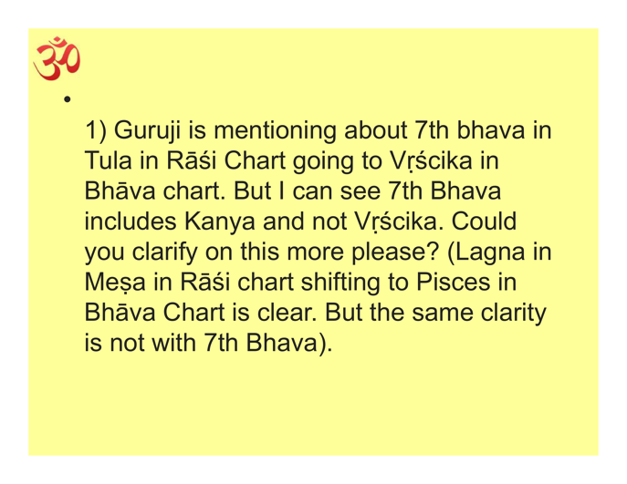

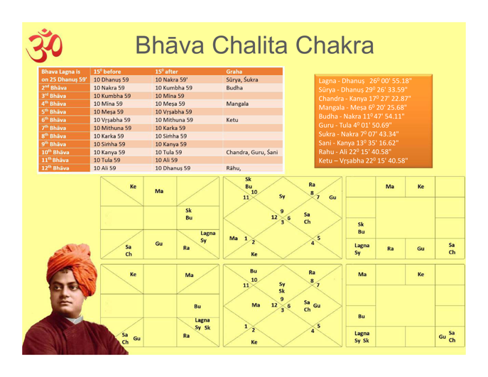
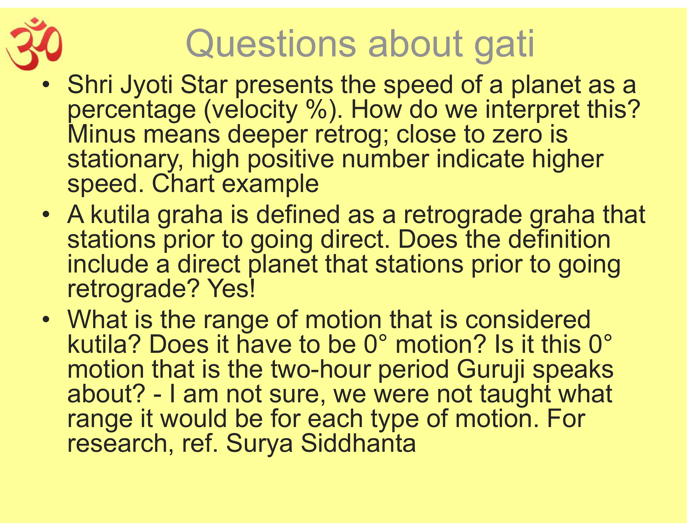
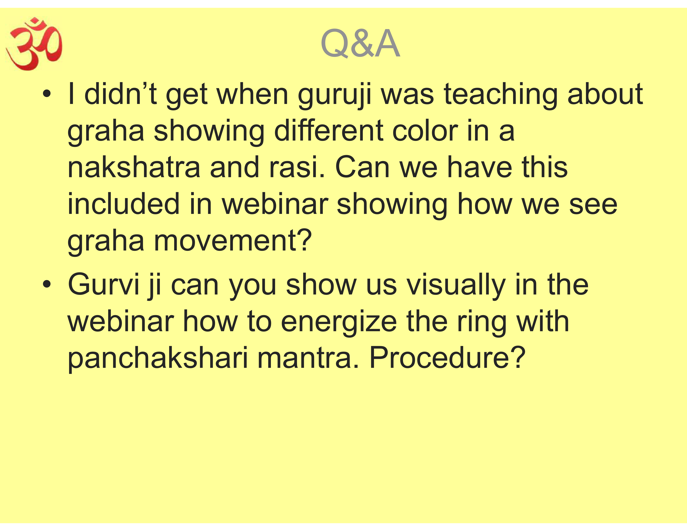
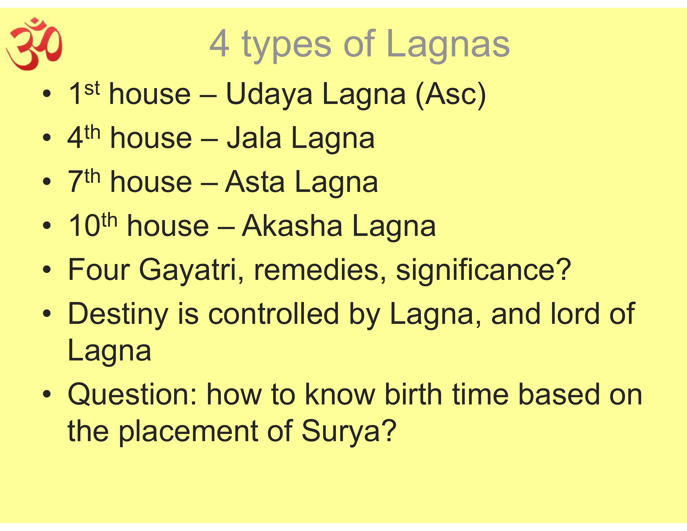
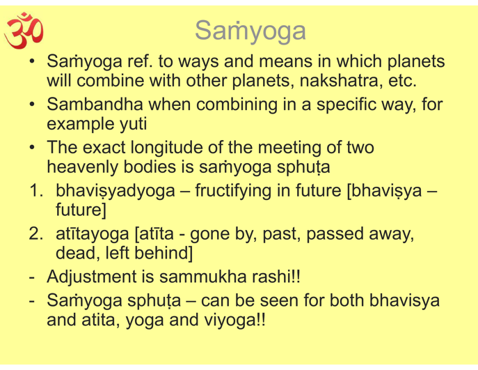
Purpose: Worship when starting something new (job, family, project, book)
| Graha | Adi Devata | Purpose |
|---|---|---|
| Surya | Vahni (Agni) | Awakens purpose, takes prayers to devas |
| Chandra | Ambika | |
| Mangala | Subramanya | Auspicious form (NOT Skanda/warrior form) |
| Budha | Rama (0-10°), Krishna (10-20°), Vishnu (20-30°) | Choose based on degree |
| Guru | ||
| Shukra | ||
| Shani |
Key Point: Adi devatas are for awakening/starting activities.
Purpose: Control, sustain, protect, remove obstacles, complete karmas
| Graha | Pratiyadi Devata | Nature |
|---|---|---|
| Surya | Shiva | Manifested form (with form) |
| Chandra | Gauri | |
| Mangala | Subramanya | Same as Adi devata |
| Budha | Narayana | Unmanifested, above avatars |
| Guru | Sadashiva | Unmanifested Shiva (no form) |
| Shukra | Lakshmi | Sustains relationships, love |
| Shani | Krishna Narayana (Jagannath) | Relieves sins, without form |
| Rahu | Chandi (Durga) | |
| Ketu | Ganesha |
Key Difference: - Adi devata = Start things - Pratiyadi devata = Sustain, protect, correct, complete
When to Use: Based on dasha and current need (not all at once!)
Kendras represent Vishnu’s sustaining power
| Lagna | Sun Position | Time | Represents | Bija (Vaishnava) | Bija (Shaiva) |
|---|---|---|---|---|---|
| Udaya (1st) | Sunrise | ~6 AM | Life beginning, Buddhi (intelligence) | Hare | Om |
| Asta (7th) | Sunset | ~6 PM | Moon rises, social life, Shuddhi (cleansing) | Rama | Hreem |
| Jala (4th) | Midnight | ~12 AM | Moon’s full potential, rest, forgiveness | Krishna | Kleem |
| Akasha/Svarga (10th) | Midday | ~12 PM | Sun’s full potential, Siddhi (accomplishment), karma burning | Hare | Shreem |
SAMADHI = Balance of all 4: Buddhi + Shuddhi + Siddhi + Riti
From Akasha Lagna (10th), count 4th, 5th, 9th, 12th houses. These become from your Lagna: 1st, 2nd, 6th, 9th
Venus & Mercury signs from Akasha = 3rd, 4th, 11th, 12th from Lagna
Mars & Saturn signs from Akasha = 5th, 7th, 8th, 10th from Lagna
Two Devatas: 1. Kubera = Wealth 2. Vishnu = Purity/Enlightenment
Choice: Do we choose wealth or enlightenment?
Reversal Principle: - 12th from Sun = What we GAIN (nature loses, we gain) - 2nd from Sun = What we LOSE (we give back to nature)
SATTVA: Surya, Chandra, Guru (sustenance, protection) ↓ RAHU (border - attacks sattva) ↓ RAJAS: Budha (5), Shukra (6) ↓ KETU (border) ↓ TAMAS: Mangala, Shani
Numbers: Sy=1, Ch=2, Gu=3, Ra=4, Bu=5, Sk=6, Ke=7, Sa=8, Ma=9
| Type | Nature | Grahas | Character |
|---|---|---|---|
| Uttama | Purest sattva | Saumya & Punya (Moon, Guru, Venus, Mercury) | Forgiveness, control, calm, humble |
| Madhyama | Kshatriya, harsh but auspicious | Surya only | Protects dharma, corrects (like prison) |
| Udashina | Sad, depressed, greedy | Venus, Mercury (rajas) | Never satisfied, sorrowful |
| Adhama | Evil, harsh | Mars, Saturn (tamas) | Lies, lazy, violent |
Problems to Develop: - Tamas (Rakshasa) = Empathy (Daya) - Rajas (Manushya) = Donation (Dana) - Sattva (Deva) = Control senses
Goal: Become Gunatita (beyond gunas)
Relationship: Panchamakaras cause Shadripus
| House | Karaka(s) | What They Show |
|---|---|---|
| 1st | Surya | Self |
| 2nd | Guru (wealth), Budha (speech) | |
| 3rd | Mangala | Courage, siblings |
| 4th | Chandra (mother), Mangala (property) | |
| 5th | Guru | Children, intelligence |
| 6th | Shani, Mangala | Enemies, disease |
| 7th | Shukra | Spouse |
| 8th | Shani | Longevity |
| 9th | Surya, Guru | Father, dharma |
| 10th | Budha (job ability), Surya (need), Shani (effort), Guru (fruits) | Career |
| 11th | Guru | Gains |
| 12th | Shani | Loss, expenses |
Technique: Place karaka as lagna to see specific relationships - E.g., 4th from Guru = knowledge from mother - 5th from Budha = communication with children
| Sign | Aditya | Sign | Aditya |
|---|---|---|---|
| Mesha | Dhata | Tula | Indra |
| Vrishabha | Aryaman | Vrishchika | (Ali) |
| Mithuna | Mitra | Dhanu | Bhaga |
| Karkata | Varuna | Makara | Bhaga |
| Simha | Indra | Kumbha | |
| Kanya | Vivasvan | Meena | Vishnu |
** above table is incorrect please check the slides **
Two Adityas matter: 1. Lagna Aditya = Defines YOU, intellectual functioning (personal) 2. Sun sign Aditya = What you do to the WORLD (external)
House where Sun placed = Area blessed by that Aditya
Key Point: Look at placement of dosha-carrying planet
Example: Mithuna lagna (Lakshmi dosha via Shukra) - Where is Venus placed? = Problematic area - Lordship also matters - Must check if planet is afflicted for bigger problems
Not all doom! Even afflicted placements in upachaya houses can give benefits.
Questions to explore: - Which dasha are you in now? - What specific area needs remedy? - Want to understand your chart’s specific dosha?
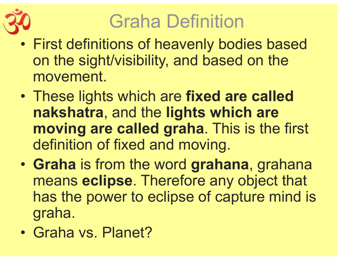
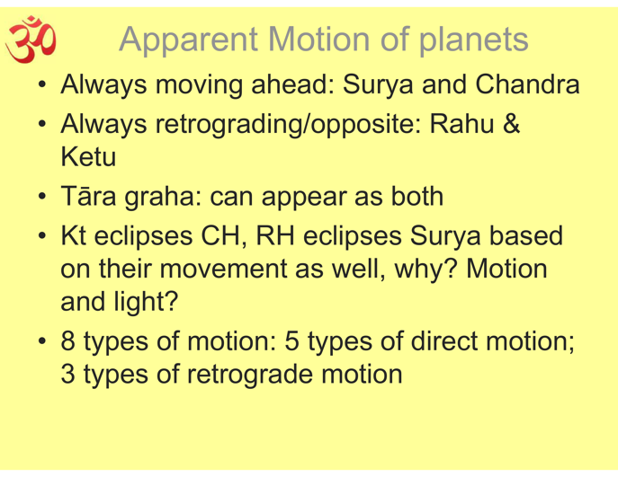
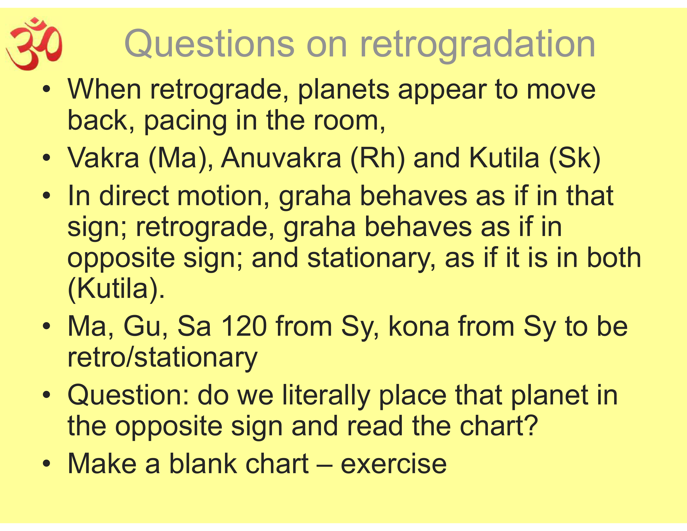
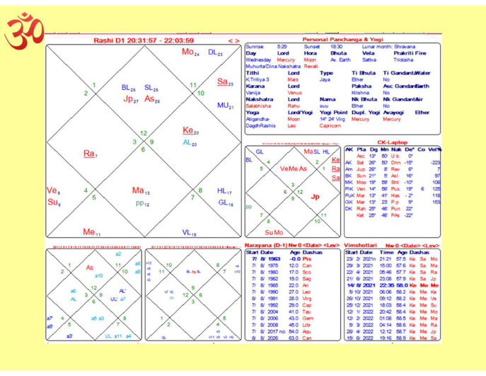
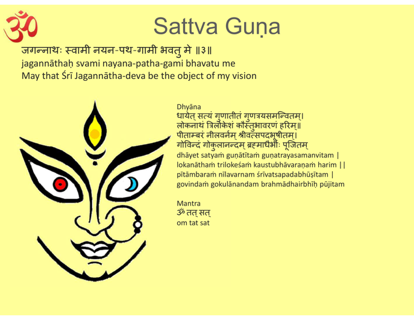
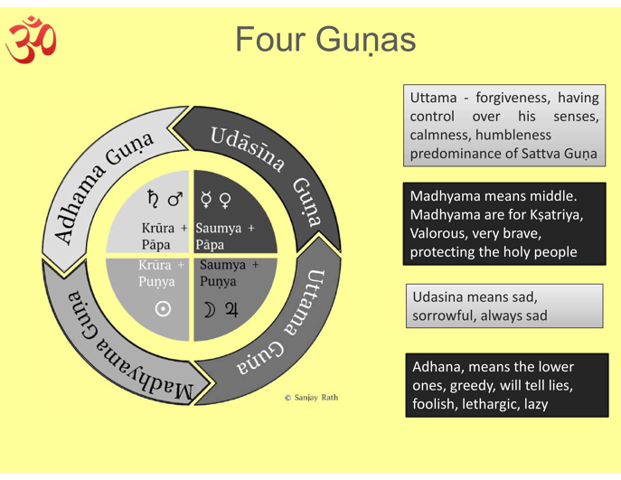

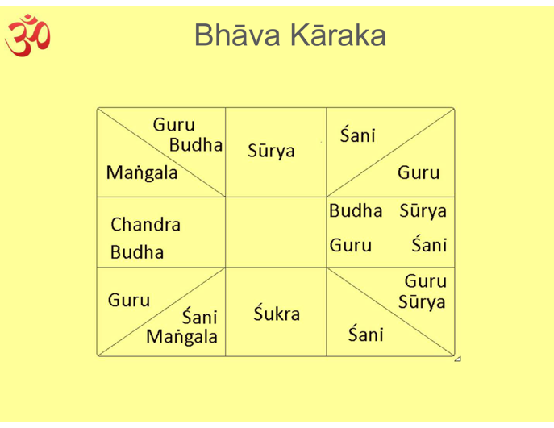

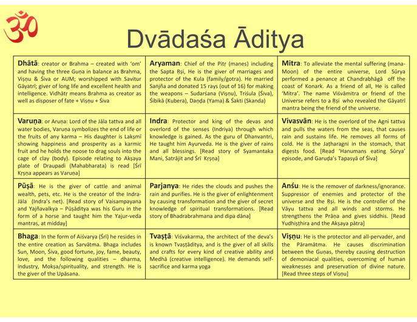
What it is: Planets gain special strength when placed in specific houses (kendras) from the lagna. Behind each planet in dig bala is a devata (deity) blessing that position.
Key Principle: Dig bala is a kendra-based concept - planets gain this strength in the 1st, 4th, 7th, or 10th houses from lagna.
Each of the 9 grahas plus lagna has a specific dig bala position: - Surya (10th house) - Indra’s blessing: oversight, control, statesmanship - Chandra (4th house) - Vayu’s blessing: speed, pranayama knowledge - Mangal (10th house) - Yama’s blessing: knowledge of borders, longevity, dasha - Budha (1st house) - Kubera’s blessing: knowledge of wealth - Guru (1st house) - Ishana’s blessing: full knowledge, reasoning (viveka) - Shukra (4th house) - Agni’s blessing: vision, ability to envision - Shani (7th house) - Varuna’s blessing: carrying burdens, labor knowledge - Rahu (7th house) - Niriti’s blessing: understanding chaos and its removal - Ketu (10th house) - Ananta’s blessing: meditation, spiritual introspection - Lagna (vargottama) - Mritunjaya blessing: longevity
From Lagna: The devata gives knowledge to the person - this is a blessing that can be strengthened through remedies
From Arudha Lagna: Shows the physical direction where blessings manifest (useful for relocation advice)
Conjunctions: When a dig bala planet conjoins another planet, it spills the blessing onto that planet (like an expensive house raising the value of a neighboring cheap house)
Dispositor is Key: The dispositor can lock or unlock the blessing - check its condition first. If doing remedies, worship the dispositor first, then the dig bala planet.
Zero Dig Bala: Opposite placement shows lack of knowledge in houses ruled by that planet - the person may be capable but unable to apply themselves in those areas
Independent of Sign: Dig bala works regardless of whether the planet is exalted, debilitated, or in own sign - these are separate layers of analysis
Abraham Lincoln: Budha (lagna lord) in 1st house conjunct Surya - Kubera’s wealth blessing manifested through Surya’s statesmanship. Rahu-Mangal in 9th activated through war/law-making but ultimately led to his death (Rahu in marana karaka sthana defeated by Mangal).
Would you like me to clarify any specific aspect of dig bala?
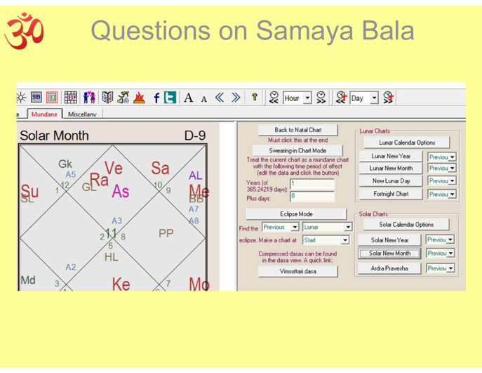